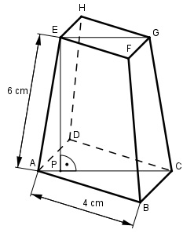

Aufgabe 261 Wie groß ist das Vokumen V des dargestellten quadratischen Pyramidenstumpfes, wenn AP = d/5 ist?

Satz von Pythagoras im Dreieck ABC: AB = BC = 4 cm AC2 = AB2 + BC2 = 42 cm2 + 42 cm2 = 32 cm2 |√ AC = 5,66 cm AP = d/5 = 5,66 cm/5 = 1,132 cm Satz von Pythagoras im Dreieck APE: AE2 = AP2 + PE2 | - AP2 PE2 = AE2 - AP2 = = 62 cm2 - 1,1322 cm2 = 34,72 cm2 |√ PE = 5,9 cm AC - EG AP = --------- |*2 2 2 * AP = AC - EG |+EG 2 * AP + EG = AC 2 * AP EG = AC - 2 * AP = = 5,66 cm - 2 * 1,132 cm = 3,4 cm Satz von Pythagoras im Dreieck EFG: EF = FG EG2 = EF2 + FG2 = 2 * EF2 | :2 EG2 3,42 cm2 EF2 = ----- = ---------- = 5,78 cm2 |√ 2 2 EF = 2,4 cm Pyramidenstumpf: V = cm3 V = cm3 V = cm3 5,9 V = ----- * (16 + 4 * 2,4 + 5,78) cm3 3 V = 61,7 cm3